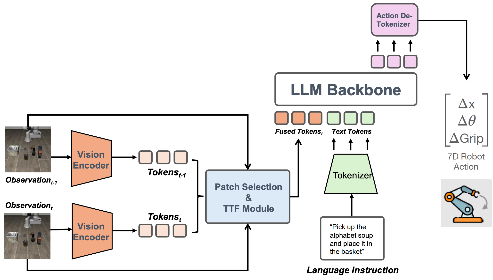
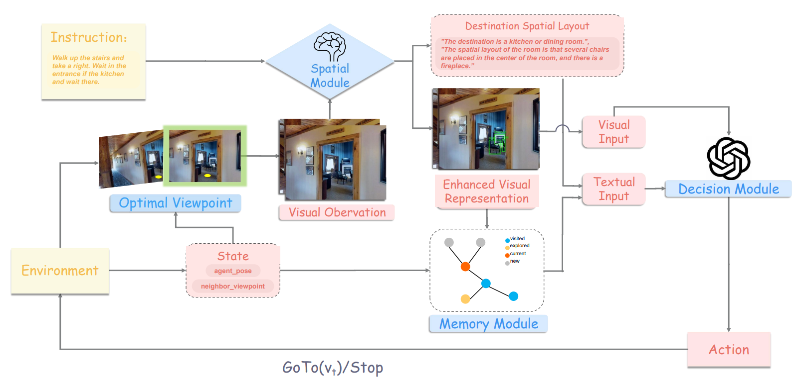

Chenghao LiuMaster Student, Peking University
Email: chliu [at] stu [dot] pku [dot] edu [dot] cn Last updated: March 7, 2026 |
|
{kind=link}
Biography
I am currently pursuing my master's degree at Peking University, advised by Prof. Songfang Huang. I received my bachelor's degree from Huazhong University of Science and Technology.
My research interests mainly include: 1) Efficient AI: VLM/VLA training and inference optimization, implicit reasoning, etc.; 2) Multimodal AI: LLM/VLM for content understanding, generative recommendation, and embodied tasks, etc.
I am also studying and exploring several emerging directions: 3) Agentic AI: exploring the ability of LLMs to autonomously plan and execute tasks; 4) AI for Trading (a hobby): exploring the use of LLMs for factor discovery, autonomous trading, etc., to assist quantitative trading.
If you share similar research interests, feel free to reach out.
Experience
|
ByteDance – TikTok Duration: Dec. 2025 – Present Focus: LLM/VLM Training for Multimodal Content Understanding and Generative Recommendation |
|
|
Peking University - XLab Duration: Jan. 2025 - Oct. 2025 Focus: VLM/VLA Inference Optimization, LLM Agent-based VLN |
|
|
|
Samsung Research China - Advanced Research Lab Duration: Feb. 2025 - Apr. 2025 Focus: VLM/VLA Training and Inference |
Education
|
|
Peking University M.Eng., School of Advanced Manufacturing and Robotics Duration: Sep. 2024 - Jul. 2027 (expected) |
|
Huazhong University of Science and Technology B.Eng., School of Cyber Science and Engineering Duration: Sep. 2020 - Jul. 2024 |
Selected Publications
|
 |
TTF-VLA: Temporal Token Fusion via Pixel-Attention Integration for Vision-Language-Action Models Chenghao Liu, Jiachen Zhang, Chengxuan Li, Zhimu Zhou, Shixin Wu, Songfang Huang, Huiling Duan |
|
 |
MSNav: Zero-Shot Vision-and-Language Navigation with Dynamic Memory and LLM Spatial Reasoning Chenghao Liu, Zhimu Zhou, Jiachen Zhang, Minghao Zhang, Songfang Huang, Huiling Duan ICASSP 2026 [paper] |
Misc
|
I am interested in zero-sum environments, including both markets and games. In my spare time, I engage in trading activities in markets such as cryptocurrencies, U.S. stocks, and prediction markets, as well as games like Texas Hold'em and Mahjong. I enjoy analyzing these competitive settings and trying to gain an edge through strategy and reasoning. It's just for fun — don't gamble. I also enjoy video games, including single-player games on platforms such as PlayStation, Nintendo Switch, and Steam, as well as cooperative multiplayer games. My favorite game is The Legend of Zelda: Breath of the Wild—the 100+ hours I spent playing it are among the happiest moments of my life. For multiplayer games, I particularly enjoy League of Legends, which is probably the game I've spent the most time playing. If you happen to share similar interests, feel free to reach out. |
Total Page Views